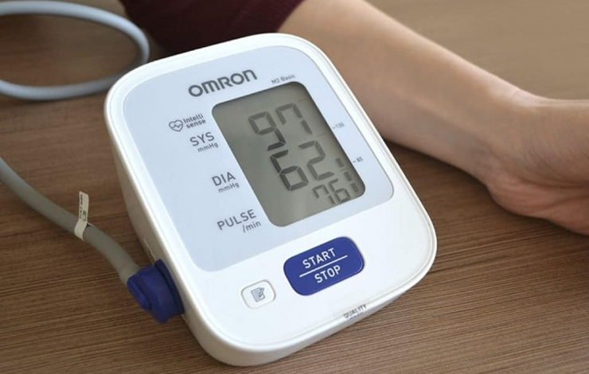
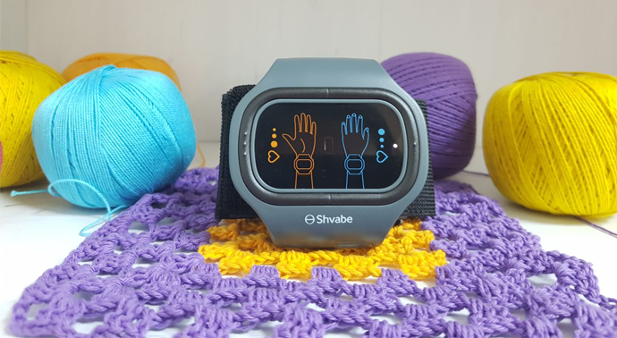

-
 Elza Lander10 minuti per la lettura
Elza Lander10 minuti per la lettura
La salvezza per tutti: liberiamoci dell’ipotensione in 6 minuti
Ciao miei cari!
Un anno fa facevo uno stile di vita casalingo tipico:a malapena avevo la forza di lavorare e fare un minimo di faccende domestiche. La stanchezza cronica, il mal di testa lancinante, la nausea e altri sintomi noti a chi ha problemi di ipotensione mi hanno trasformato in una nonna sedentaria molto prima della pensione. Ora ho 54 anni. Corro la mattina, vado in palestra, vado a cavallo e sto seriamente pensando che vorrei imparare a fare surf. E tutto perché un anno fa ho trovato il modo di sbarazzarmi dell'ipotensione una volta per tutte.

È iniziato tutto con la nausea
Fin da piccola ho sempre avuto problemi di nausea. Non riuscivo a leggere se ero su un mezzo di trasporto. L’unico modo per spostarmi senza vomitare in tutto l’autobus era riempirmi di pillole.
Dopo 30 anni, a questo problema si sono aggiunti i mal di testa. Non posso dire che si trattasse di dolore comune, vertigini o dolore alle tempie. Era una sensazione come se avessi un peso sulla testa. Sentivo come se avessi un perforatore in azione nelle orecchie, come se avessi i fuochi d'artificio davanti agli occhi e stavo diventando una sorta di pianeta in miniatura:come la terra ruotavo attorno al mio asse.
Mi veniva la nausea, ci vedevo doppio e perdevo i sensi. Una pillola, un po’ d’acqua e via, mi sentivo nuovamente bene. Poi mi dovevo sdraiare e aspettare. A volte dovevo stare sdraiata un giorno prima di poter tornare ad una vita normale.
Fino ai 45 anni avevo crisi massimo una volte l’anno. A 50 anni la situazione è peggiorata, iniziando ad impedirmi di fare una vita normale.
 Ormai ero abituata ad avere la pressione bassa
Cura autonoma: voli e cadute con i conseguenti danni
I metodi popolari per combattere l’ipotensione sono a volte molto pericolosi. Magari ti salvano in certe situazioni estreme (come un bel caffè doppio), ma allo stesso tempo ti uccidono lentamente.
Ho smesso di curarmi da sola quando per via degli energetici naturali sono finita in traumatologia.
 Rompersi le ossa per via dell’ipotensione è troppo!
Rompersi le ossa per via dell’ipotensione è troppo!
A causa della pioggia, mi sentivo malissimo e non riuscivo a muovermi per andare al lavoro. La testa sembrava sul punto di esplodere, come una noce troppo secca. È impossibile addormentarsi in questo stato, quindi ho deciso di raccogliere le forze e andare a fare le cose di lavoro.
Un bel cappuccino fatto in casa, un paio di pillole per la eemicrania e dell’eleuteococco ed ero pronta e piena di energie e buon umore. La mia attività cerebrale era praticamente in fiamme.
Ho passato circa tre ore in questo stato. La quarta ora mi è venuta voglia di festeggiare la mia vittoria contro la pressione bassa. Mi sono alzata per andare a farmi un caffè e dopo un paio di passi sono svenuta. Così ho avuto la prima frattura in vita mia:sono caduta sul braccio rompendomi il polso. Ho deciso che non avrei fatto più strani esperimenti.

La malattia che nessuno prende sul serio
La mia pressione è sempre stata bassa, ma come tale non mi è stata diagnosticata. Ho sempre avuto problemi legati ai cambi di tempo, il massimo che i medici mi hanno raccomandato è stato di riposare di più, innervosirmi di meno e, occasionalmente, bere caffè a scopo terapeutico.
La cosa più spiacevole dell'ipotensione è che non esistono farmaci miratii. Ci sono pillole per il mal di testa (non aiutano, ma ci sono), per la nausea, per la cinetosi , ma pillole genericheper l'ipertensione non sono ancora state inventate. Però hanno inventato un apparato che dà forze meglio di qualsiasi medicinale, allevia il mal di testa, stabilizza la pressione e, di fatto, allevia l'ipotensione.
 In caso di ipotensione i vasi sanguigni si stringono, la circolazione sanguigna rallenta e c’è carenza di ossigeno
In caso di ipotensione i vasi sanguigni si stringono, la circolazione sanguigna rallenta e c’è carenza di ossigeno
Salvezza per i malati di ipotensione
La mia collega che ha chiamato l’ambulanza e mi ha aiutato a rimettermi in piedi mi ha parlato del correttore di pressione ABP-051. SI tratta di un apparecchio che mantiene nella norma la conicità dei vasi sanguigni dei malati di ipotensione grazie a degli impulsi elettrici. La persona neanche li nota ma l’organismo ne trae incredibili benefici. La terapia aiuta molto in caso di:
- Dolori alla testa, emicranie;
- Stanchezza cronica;
- Problemi di sonno;
- Nervosismo, irritabilità;
- Tachicardia;
- Malattie cardiovascolari.
Avevo poca fiducia nel successo della cosa, ma ho preso il correttore della mia collega per provarlo. Due settimane dopo, mentre ero ancora in congedo per malattia, mi sono offerta come volontaria in ufficio e con una mano in un paio d'ore ho fatto tutto il lavoro che non avevo mai fatto prima con due.

Eh! Finalmente avevo forza! Ho iniziato a dormire bene, mi svegliavo ben riposata e ho smesso di sognare di dormire ogni 5 minuti. CI sono stati giorni di pioggia ma non hanno avuto nessun effetto su di me. Finalmente ero una persona normale, non più una stazione meteorologica con le gambe ero piena di forze e pronta a fare qualsiasi cosa.
Dove prendere l’apparecchio contro l’ipotensione
Ovviamente ho ordinato il correttore di pressione. Secondo le istruzioni va usato due settimane (io questo ciclo già lo avevo fatto con quello della mia collega con grande successo).
Per mantenere la salute consigliano di ripetere il ciclo ogni 4-6 mesi. CI is stanca ogni giorno e lo stress non è il massimo, unito ad un’alimentazione che non è mai perfetta. Per questo ho sempre a portata di mano il braccialetto. Lo si può indossare ogni tanto in caso di mal di testa o anche per curare tutta una serie di problematiche.

Riguardo alle malattie che cura questo apparecchio potete trovare più informazioni sul sito del produttore. Sempre li si può ordinare a poco questo magico apparecchio. Fino all’ è in offerta, il correttore può essere ordinato al 50%.
Spero che ogni lettore potrà tornare in salute.


Weekly Newsletter
Iscrivetevi alle news indipendenti
Dai migliori blogger di LiveJournal